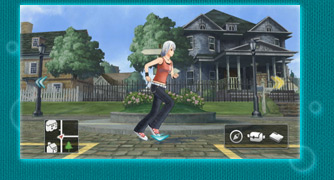
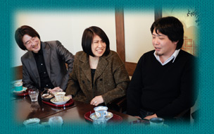

―― |
ゲーム画面はDSのときとかなり変わっていますね。 |
小嶺 |
本当に、ゲーム画面が決定するまでは、試行錯誤の連続でした。まず移動のシーンは、DSのときのように単純にトップビューで進めようと考えていたときもありました。 |
鈴木 |
あるとき宮川が「舞台でやるのはどうだろう」と言い出しまして。 |
小嶺 |
そこで方向性が見えてきたんですね。舞台の上をキャラクターが動くということと、それから手描き風な表現を活かしたいという金崎のこだわりがあったので、まさに舞台のような書割風の背景ができあがりました。 |
―― |
静止画で見ると気づかなかったのですが、動画で見ると背景に立体感が感じられますね。 |
|
宮川 |
単に３Ｄで横スクロールしているんじゃないんですよ。実は背景が若干湾曲しているので、まっすぐ横に移動しているように見えて奥行きがでる。だからちょっと不思議な感じに見えると思います。 |
 |
小嶺 |
室内への移動は、アシュレイが走りつづけたままで舞台を切り替えていくようなイメージ表現にしました。これは、他のシーンを含め「アシュレイを常に画面に残す」というコンセプトから来ています。 |
|
齋藤 |
これら舞台的な演出は演劇の舞台を観客席から見ていると考えていただくとイメージしやすいと思います。場面転換時に、小道具がセットされる演出もそのひとつです。 |
|
金崎 |
最近は、ゲームでも多様な表現を実現することができるようになりましたが、ゲームでしかできない見せ方があるんじゃないかと考えたんです。アートディレクションの部分ではひとつずつ見たときは良くても、全部を繋げて見ると印象が違うこともあって、それを納得のいくクオリティに引き上げるのは大変でした。 |
|
―― |
長い距離を移動するときに高速で走る演出が面白いですね。 |
|
宮川 |
マップ間のつなぎには苦労しましたが、新しい見せ方ができたと思います。 |
 |
鈴木 |
普通に移動しているのと同じテンポだと間延びしてしまいますので、疾走感のある特殊な演出を入れています。 |
|
吉良 |
この演出を初めて見せていただいたときは、「これだ！」と思いましたね。 |
|